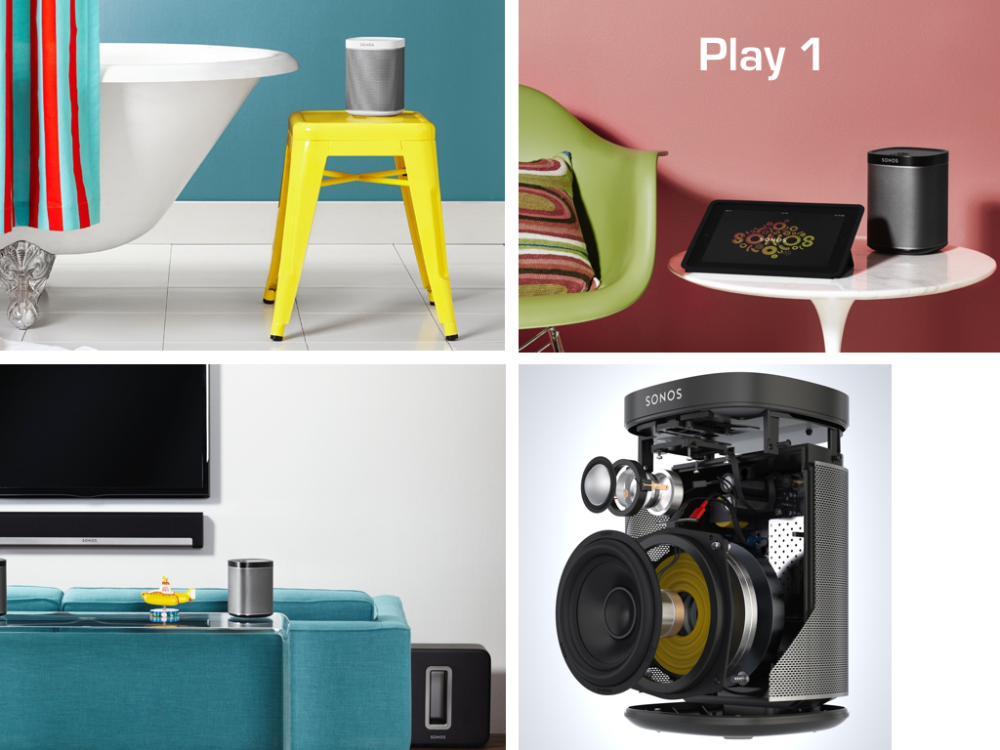
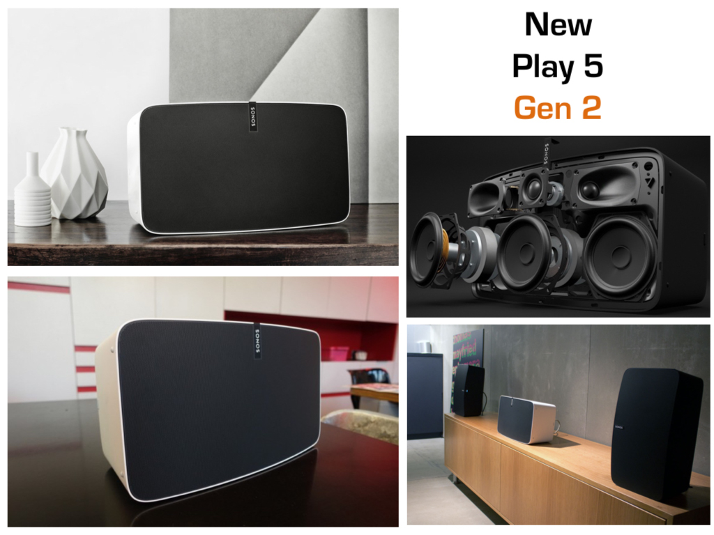
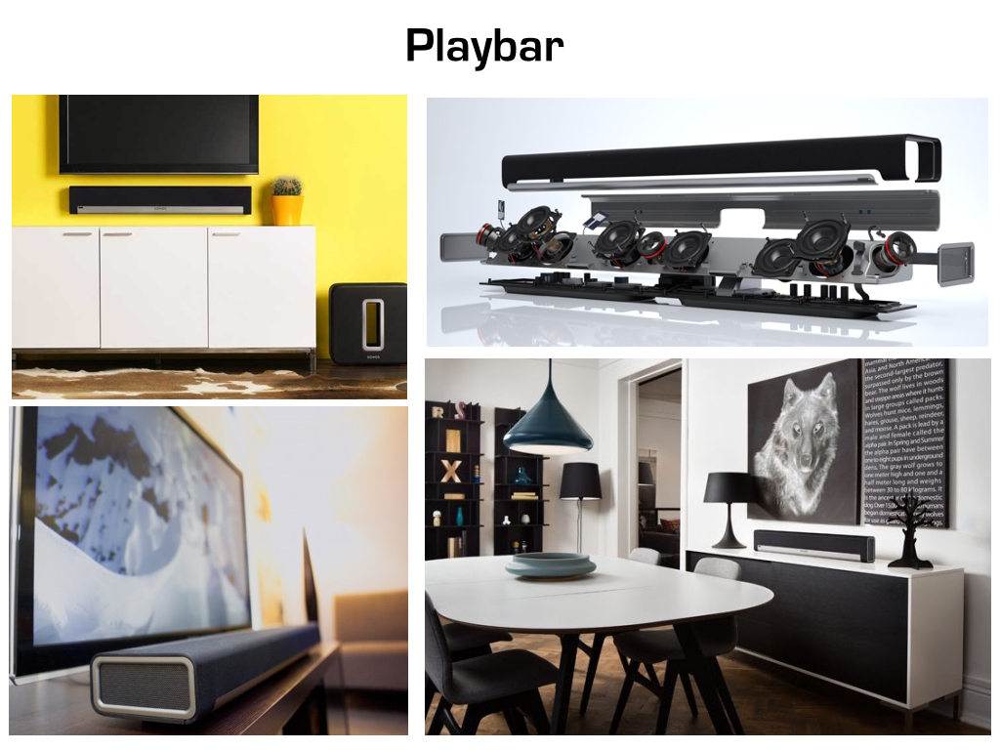

Sonos
El sistema de sonido Sonos te permite instalar sonido en una o varias zonas de la vivienda de forma sencilla.
El sistema de sonido Sonos se instala conectando un cable a la pared. Para configurarlo, descarga la aplicación gratuita para iOs o Android y sigue los pasos.
Play 1
US$220 + IVA
Play 3
US$330 + IVAPlay 3 Gen 2
US$550 + IVAPlaybar
US$770 + IVAPlaybar Mount Kit
US$65 + IVA incluidoSub
US$770 + IVAConnect:amp
US$550 + IVAConnect
US$384 + IVABoost
US$110 + IVASistemas de teatro en casa
Teatro en casa Sonos 3.1
US$1.715 + IVA1 Playbar
1 Soporte de pared para playbar
1 Sub
1 Sonos Boost
Teatro en casa Sonos 5.1
US$2.155 + IVA1 Playbar
1 Soporte de pared para playbar
1 Sub
2 Play 1
1 Sonos Boost
Un solo sistema, múltiples posibilidades
Recorramos una vivienda para conocer como instalar sonido en cada zona
Zona social - Parlantes de techo
Conecte un amplificador CONNECT AMP a 2 o 4 parlantes de techo.
Si desea un mejor sonido puede agregar un subwoofer inalámbrico SONOS SUB, que no necesita mas que un punto de corriente para conectarse.
También puede instalar un Subwoofer de otras marcas conectado mediante un cable de sonido.
El amplificador Connect Amp tiene una terminal de tipo RCA para conectar el sonido del TV para oir el sonido del TV en esta zona o cualquier otra zona de la vivienda.
Zona social - Parlantes Play
Según el tamaño de la zona social, puede instalar 1 o 2 parlantes Sonos Play.
Los parlantes PLAY vienen en 3 tamaños: El Play 1 para zonas pequeñas, Play 3 zonas medianas y Play 5 para zonas de mayor tamaño.
El Play 5 cuenta con conexión de entrada tipo Plug 3.5 mm para conectar fuentes de sonido con un cable de audífono.
Si desea mejorar la calidad del sonido, puede agregar 1 SONOS SUB fácilmente, sin cables, solo conectando el Sonos Sub a la corriente.
Ofrecemos toda la línea de soportes de piso y de pared para la línea de SONOS.
Zona social - Parlantes inalámbricos Dynaudio
Si la potencia y calidad del Play 5 no le basta, puede agregar el mejor sistema de sonido inalámbrico del mundo: los parlantes XEO y FOCUS de Dynaudio de forma sencilla.
Solo necesita comprar un SONOS CONNECT y conectarlo mediante un cable de fibra óptica al transmisor inalámbrico del sistema Dynaudio.
Con el SONOS CONNECT también puede agregar muchos parlantes a una zona usando un amplificador de varios canales.
El SONOS CONNECT también cuenta con conectores RCA para conectar el sonido de su TV o de otros equipos mediante un cable para escuchar el sonido en esta zona o cualquier otra de la vivineda.
Teatro en casa Sonos
Ahora es posible disfrutar de un teatro en casa de alta fidelidad y potencia 100% inalámbrico.
Puede comenzar con el SONOS PLAYBAR que se ubica debajo de la pantalla de TV y se conecta al mismo por medio de un cable de fibra óptica incluido.
Agregue un subwoofer SONOS SUB para mejorar los efectos de sonido de las películas con explosiones o videos musicales.
Si desea un sonido completamente envolvente agregue dos parlantes Play 1 o Play 3 en la zona posterior.
Si cuenta con puntos de sonido en techo, puede usa un SONOS CONNECT AMP conectado a dos parlantes de incrustar en techo o pared.
El SONOS PLAYBAR es la mejor barra de sonido inalámbrico disponible en el mercado y se comanda usando el mismo control remoto del TV o del decodificador de Tv.
Conecte su teatro en casa existente a SONOS
A estas alturas debe estarse preguntando como puede conectar su sistema de teatro en caso (Bose, LG, Samsung, Sony, Marantz, Denon o cualquier otro) al sistema de sonido SONOS
Muy sencillo: Solo necesita un SONOS CONNECT que conectara a su sistema existente mediante un cable RCA (incluido), de fibra optica o Coaxial Digital
Una vez conectado encienda su teatro en casa, seleccione la fuente por la conecto el SONOS y listo
Habitaciones - Play 1
Instale uno o dos play 1 en las mesas de noche.
Puede agregar un SONOS PLAYBAR conectado al TV y configurar los PLAY 1 como sonido envolvente.
El Play 1 esta disponible en color Blanco y Negro
Habitaciones - Play 3
Instale uno o dos play 3 en las mesas de noche. Disponibles en color negro o blanco
Pueden colocarse en posición horizontal o vertical
Si le gusta ver películas en su habitación, agregue un SONOS PLAYBAR conectado al televisor.
Si cuenta con ductos para parlantes de techo, instale un SONOS CONNECT AMP y dos parlantes de techo a los pies de la cama sumados a los Play 3
Baños - Play 1
El Play 1 fue diseñado para ser usado en baños, su tamaño compacto y la base en caucho a prueba de agua lo hacen el parlante ideal para estas zonas.
Disponible en color blanco o negro
Estudio - Play 3
En el estudio o en oficinas de hogar, el SONOS PLAY 3 es el equipo recomendado por su dispersión de sonido y mayor profundidad en los sonidos bajos.

Estudio - Boost
El SONOS BOOST permite conectar el sistema de sonido Sonos a internet y envia la señal de forma inalámbrica al resto de componentes SONOS en la vivienda.
El Boost se usa cuando no es posible conectar con un cable de red unos de los parlantes o amplificadores de SONOS al router o cuando los parlantes se van a ubicar a gran distancia uno del otro y la comunicación inalámbrica entre ellos se dificulta.
Jardín - SONOS CONNECT + SONARRAY
El SONOS CONNECT puede conectarlo a uno de los nuevos amplificadores DSP de Sonance de 2 canales x 150 watts para amplificar el sonido de SONARRAY
El SONARRAY de Sonance es un sistema de sonido envolvente para zonas exteriores compuesto por 8 parlantes de incrustar en tierra y un subwoofer
Terraza - Connect amp + parlantes de fachada
Conecte un Connect Amp a una Roca Subwoofer y un par de parlantes para exterior Proficient o Sonance, suba el volumen y mire la cara de sus amigos
Sonos Controler - El control remoto
El sistema SONOS se controla usando su smart phone, tableta y computador.
Descargue la aplicación gratuita para iOS y Android.
Descargue el software gratuito de la pagina de soporte de Sonos. Además de controlar su sistema podrá escuchar su biblioteca músical en cualquiera de los componentes de Sonos.
¿Qué música puedo escuchar?
De forma gratuita puede escuchar emisoras de radio de Colombia y del resto del mundo usando el servicio de Tune In Radio.
Podrá escuchar igualmente la música almacenada en su PC o dispositivo móvil.
Para escuchar Spotify, Deezer o alguno de los otros servicios de música en línea debe contar con suscripción Premium que hoy en dia cuesta alrededor de 12.000 pesos mensuales para disfrutar de millones de canciones y crear sus propias listas de sonido
Escuchar CD / Memorias USB
Para escuchar CD o cualquier fuente de sonido análoga como un MP3 o una memoria USB conecte el reproductor de CD o un equipo que lea memorias USB a uno de estos 3 equipos de SONOS que cuentas con conexiones en la parte posterior:
Sonos Connect
Sonos Connect AMP
Sonos Play 5
Una vez conectada podrá escucharla en cualquiera de los equipos SONOS de su casa, incluso en su teatro en casa Sonos con la barra de sonido Playbar

Trueplay
Trueplay es una característica de la aplicación de control de Sonos para IOs que ajusta los parámetros de sonido de los parlantes Play 1, 3 y 5 de acuerdo con el tamaño de la habitación y la ubicación del parlante en la misma
Ver videoGalería de imágenes
- 

- 
- 